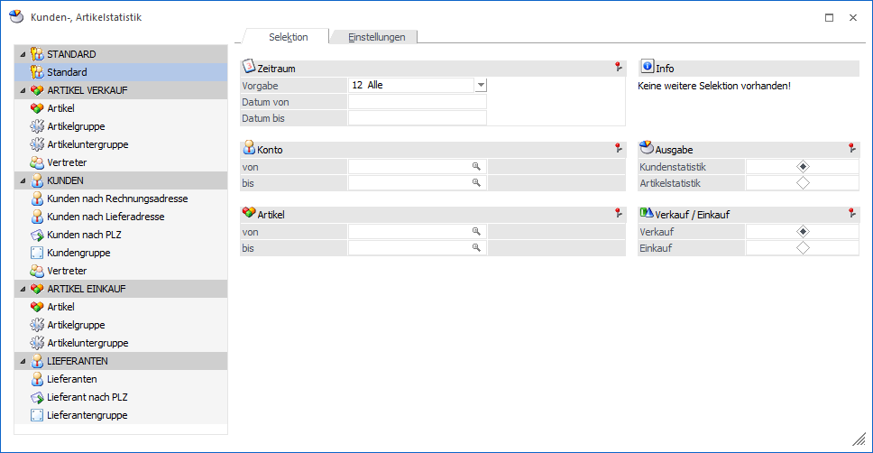
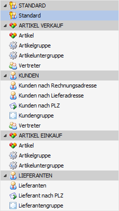
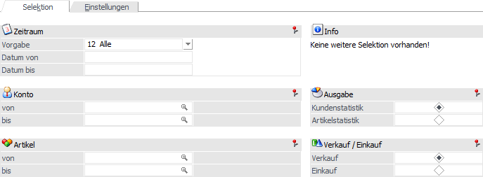
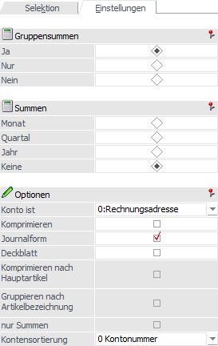
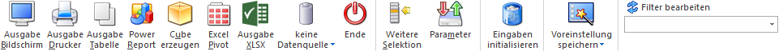

Im Programmpunkt…
1 WinLine FAKT
1 Auswertungen
1 Statistik
1 Verkaufsstatistik
… können Informationen über Artikelverkäufe und -einkäufe bzw. Kundenverkäufe und Lieferantenkäufe abgerufen werden.
Hinweis
Grundsätzlich stammen alle hier ausgegebenen Werte aus der internen Verkaufsstatistik, welche bei dem Druck einer Faktura gefüllt wird. Ob und wie detailliert diese Statistik geführt wird, kann im Artikelstamm (Register "Lager" - Unterregister "Einstellungen" - Feld "Statistik") definiert werden:
ü 0 - Keine Statistik
Der Artikel
wird in der Verkaufsstatistik nicht berücksichtigt.
ü 1 - Einzelzeilen
Jede
Fakturenzeile, die für den Artikel erstellt wurde, wird vollständig in die
Verkaufsstatistik aufgenommen (Detailinformation).
ü 2 -Summenzeilen
Die
Fakturenzeilen des Artikels werden zu Artikelgruppenwerten verdichtet
(komprimierte Verkaufsinformation).
Achtung
In der Belegerfassung (Register "Mitte") kann dieses Statistikkennzeichen pro Artikelzeile geändert werden.

Das Fenster "Kunden-, Artikelstatistik" untergliedert sich in die folgenden Bereiche:
ü Bereich "Auswertungsmethode"
ü Bereich "Selektion und Einstellungen"
Auswertungsmethode

Die unterschiedlichen Auswertungsmethoden werden in Form einer Tabelle dargestellt. Durch Anwahl einer Methode werden im Bereich "Selektion und Einstellungen" automatisch unterschiedliche Selektionsfelder zur Verfügung gestellt.
Hinweis
Neben den dargestellten Selektionsfeldern steht mit Hilfe des Buttons "Weitere Selektion" eine Vielzahl weiterer Felder zur Verfügung.
Selektion und Einstellungen
Der Bereich "Selektionen und Einstellungen" unterteilt sich wieder in die folgenden Register
ü Selektion
ü Einstellungen
Selektion und Einstellungen - Register "Selektion"

In dem Register "Selektion" werden die Hauptselektionsfelder dargestellt. Diese sind abhängig von der gewählten Auswertungsmethode.
Hinweis
Bei einem Wechsel der Auswertungsmethode werden die bisher getätigten Selektionen übernommen (siehe "Info"). Eine Ausnahme bildet hierbei die Kontonummer. Dieses wird nur übernommen, wenn man innerhalb des Auswertungsbereichs "Verkauf" bzw. "Einkauf" navigiert.
Ø Zeitraum
Mit Hilfe der Auswahl "Vorgabe" kann der Zeitraum ausgewählt werden, in welchem das Fakturendatum der Statistikzeilen liegen soll. Folgende Vorgaben stehen zur Verfügung:
ü 1 - Heute
ü 2 - aktuelle Woche
ü 3 - letzte 7 Tage
ü 4 - letzte 14 Tage
ü 5 - aktueller Monat
ü 6 - 1. Quartal
ü 7 - 2. Quartal
ü 8 - 3. Quartal
ü 9 - 4. Quartal
ü 10 - aktuelles Jahr
ü 11 - Vorjahr
ü 12 - Alle
Aufgrund der Vorgabe werden die Felder "Datum von" und "Datum bis" gefüllt, welche aber manuell überschrieben werden können.
Ø Konto von / bis
In den Felder "Konto von / bis" kann eine Einschränkung der Kunden bzw. der Lieferanten vorgenommen werden, welche in der Ausgabe berücksichtigt werden sollen.
Ø Artikel von / bis
An dieser Stelle kann nach den Artikeln eingeschränkt werden, welche ausgewertet werden sollen. Bleiben die Felder leer, so werden alle Artikel in die Auswertung einbezogen.
Hinweis
Wird im Feld "Artikel von / bis" z.B. nur eine Artikelnummer eingegeben und dieser Artikel hat auch noch Ausprägungen, so werden alle Ausprägungen automatisch mit angedruckt. Nur wenn während des Anklickens des entsprechenden "Ausgabe"-Buttons die STRG-Taste gedrückt wird, wird nur der Hauptartikel alleine ausgewertet.
Ø Info
Im Bereich "Info" wird angezeigt, ob weitere Selektionen vorhanden sind. Diese können mit Hilfe des Buttons "Weitere Selektion" editiert werden können.
Ø Ausgabe (nur bei "Standard")
Mit Hilfe der Auswahlfelder kann definiert werden, ob die Auswertung kundenorientiert (Auswahl "Kundenstatistik") oder artikelorientiert (Auswahl "Artikelstatistik") dargestellt werden soll.
Ø Verkauf / Einkauf (nur bei "Standard")
An dieser Stelle wird definiert, ob die Statistik einkaufs- oder verkaufsseitig ausgegeben werden soll.
Selektion und Einstellungen - Register "Einstellungen"

In dem Register "Einstellungen" können Definitionen für die Ausgabe der Statistik getroffen werden. Diese Einstellungen werden bei einem Wechsel auf das Register "Selektion" benutzerspezifisch gespeichert.
Ø Gruppensumme
An dieser Stelle kann definiert werden, ob die Statistik "Gruppensummen" enthalten soll:
ü Ja
Jeder Artikel wird angeführt
und für jede Artikelgruppe wird eine Summe errechnet.
ü Nur
Es werden nur
Artikelgruppensummen ausgewertet. Die Einzelartikel werden nicht gesondert
angeführt.
ü Nein
Es gibt keine
Artikelgruppensummen. Es werden nur Einzelartikel angeführt.
Ø Summen
Mit Hilfe der Auswahlfelder kann gesteuert werden, ob Zwischensummen für Datumsbereiche gebildet werden sollen.
ü Monat
Für jeden abgeschlossenen
Monat wird eine Zwischensumme gebildet.
ü Quartal
Die Zwischensummen
werden quartalsweise gebildet.
ü Jahr
Es gibt für jedes
abgeschlossene Jahr, vorausgesetzt es wurde die Statistik über das Jahresende
mitgeführt, eine Zwischensumme.
ü Keine
Es werden keine
Zwischensummen gebildet.
Ø Konto ist
Hier kann gewählt werden, auf Basis welchen Kontos die Statistik ausgewertet (ggfs. Komprimiert) werden soll. Dabei stehen die folgenden Optionen zur Verfügung
ü 0 - Rechnungsadresse
ü 1 - Lieferadresse
ü 2 - Zusatzadresse
Ø Komprimieren
Durch Aktivierung dieser Checkbox wird pro Kunden- / Artikel-Kombination nur eine Summenzeile ausgewertet.
Hinweis
Bei der Komprimierung wird die Artikelbezeichnung ebenfalls berücksichtigt. D.h. Statistikzeilen mit gleicher Artikelnummer, aber unterschiedlicher Artikelbezeichnung, werden nicht zusammengefasst.
Ø Journalform
Ist diese Checkbox aktiviert, so werden alle Statistikdaten hintereinander ausgegeben. Ist diese Checkbox deaktiviert, wird bei Beginn jedes Kontos bzw. Artikels eine neue Seite begonnen.
Ø Deckblatt
Durch Aktivieren dieser Option wird vor Ausdruck der Statistik ein Deckblatt gedruckt, auf welchem alle Selektionen angezeigt werden. Dadurch lässt sich leichter nachvollziehen, um welche Auswertung es sich handelt.
Ø Komprimieren nach Hauptartikel
Mit dieser Option werden die Ausprägungswerte nach der Hauptartikelnummer kumuliert ausgegeben. Hierüber ist z.B. auf einen Blick ersichtlich, wie viel von einem Ausprägungsartikel in Summe verkauft wurde.
Beispiel
Es wurden 87 PCs mit unterschiedlichen Seriennummern verkauft. Bei aktivierter Option wird der Hauptartikel mit 87 Stück ausgegeben.
Ø Gruppieren nach Artikelbezeichnung
Wenn diese Option aktiviert ist, dann wird für Artikel, die zwar die gleiche Artikelnummer, aber unterschiedliche Bezeichnungen haben, eine neue Artikelüberschrift begonnen (dies gilt auch für sogenannte "diverse Artikel" - d.h. Artikel, welche im Artikelstamm in der Bezeichnung einen "*" haben). Wenn die Option nicht aktiviert ist, so werden alle Zeilen dieses Artikels unter einer Überschrift angezeigt (auch "diverse Artikel").
Ø nur Summen
Wenn diese Checkbox aktiviert ist, werden bei der Ausgabe ausschließlich Summenzeilen wiedergegeben. Um was für Summenzeilen es sich handelt, wird über den Bereich "Summen" eingestellt.
Hinweis
Eine Auswahl von "nur Summen" ist nur dann möglich, wenn unter dem Bereich "Summen" die Einstellung "Monat", "Quartal" oder "Jahr" getroffen wurde.
Ø Kontensortierung
Aus der Auswahlliste kann gewählt werden, wie die Auswertung sortiert werden soll. Folgende Optionen stehen dabei zur Verfügung:
ü 1 - Kontonummer
ü 2 - Kontobezeichnung
ü 3 - Nachname, Vorname
ü 4 - PLZ
Hinweis
Bei der Artikelstatistik (Einzelzeilen) ist das erste Sortierkriterium immer das Datum! Erst als zweites Kriterium wird nach der neuen Sortiermöglichkeit sortiert.
Wird allerdings eine komprimierte Statistik ausgegeben, dann wird wieder auf die Einstellung in der Auswahlliste zurückgegriffen.
Buttons

Ø Ausgabe Bildschirm
Mit Hilfe des Buttons "Ausgabe Bildschirm" oder der Taste F5 wird die Auswertung am Bildschirm ausgegeben.
Ø Ausgabe Drucker
Durch Anwahl des Buttons "Ausgabe Drucker" wird die Auswertung am Drucker ausgegeben.
Ø Ausgabe Tabelle
Bei der Anwahl des Buttons "Ausgabe Tabelle" wird das Artikeljournal in Form einer WinLine Tabelle dargestellt (nähere Informationen entnehmen Sie bitte dem Kapitel Verkaufsstatistik Tabelle).
Hinweis
Bei der Ausgabe auf Tabelle werden keine Summen oder Komprimierungen erzeugt.
Ø Power Report
Durch Drücken des Buttons "Power Report" wird die Auswertung auf Basis von Cube-Daten grafisch dargestellt. Die Ausgabe ist individuell anpassbar und erfolgt in der Form von "Widgets", die unterschiedlichste Darstellungen ermöglichen.
Ø Cube erzeugen
Bei Anwahl des Buttons "Cube erzeugen" wird die Verkaufsstatistik im "Olap Viewer" angezeigt. In diesem können die Daten nach verschiedenen Gesichtspunkten (Dimensionen und Fakten) ausgewertet werden.
Hinweis 1
Bei der Ausgabe sind folgende Punkte zu beachten:
ü Dimension "Artikelnummer und
Artikelbezeichnung"
Bei Verwendung der Option "Komprimieren nach
Hauptartikelnummer" entspricht diese Dimension dem Hauptartikel.
ü Dimension "Kontonummer und
Kontoname"
Je nach Einstellung der Ausgabe (Option "Konto ist") werden die
Daten der Rechnungs-, Liefer-, oder Zusatzadresse
angezeigt.
Hinweis 2
Ist im Artikelstamm die Option "Statistik" auf "2 - Summenzeilen" gestellt, so werden die Werte dieser Artikel auch bei Ausgabe als Cube nur in den Summen berücksichtigt.
Ø Excel Pivot
Durch Anwahl des Buttons "Excel Pivot" werden die selektierten Verkaufszeilen in Form einer Pivot Ausgabe in Microsoft Excel (2007 oder höher) angezeigt.
Ø Ausgabe XLSX
Mit Hilfe des Buttons "Ausgabe XLSX" werden die selektierten Verkaufszeilen an Microsoft Excel übergeben.
Ø Datenquelle
Mit Hilfe dieser Auswahl kann definiert werden, ob und wie eine Datenquelle (d.h. ein Snapshot oder eine MasterView) verwendet werden soll.
ü Keine Datenquelle
Bei Auswahl
von "keine Datenquelle" wird keine zuvor angelegte Datenquelle genutzt. D.h. die
Daten werden von der WinLine "live" ermittelt und in der gewünschten Form
ausgegeben.
Hinweis
Da die BI-Ausgabe (z.B. Cube oder Power Report) immer eine Datenquelle benötigt, wird im Hintergrund eine temporäre Datenquelle (Snapshot) gebildet.
ü Datenquelle
erstellen/aktualisieren
Die Daten werden zur Laufzeit ermittelt und an einen
zu definierenden Snapshot übergeben. Nach dem Füllen der Datenquelle wird die
gewünschte Ausgabevariante über die Datenquelle erzeugt. Dieser Vorgang kann mit
einer Zeitverzögerung verbunden sein, da die Daten zusätzlich gespeichert werden
müssen.
ü Datenquelle verwenden
Bei der
Verwendung eines Snapshots werden die Daten direkt aus der Datenquelle gelesen,
d.h. die für die Ausgabe benötigten Daten können ohne Verzögerung in der
gewünschten Variante ausgegeben werden.
Wird hingegen eine MasterView
gewählt, so werden die Daten für die Ausgabe "live" ermittelt, wobei diese so
aktuell sind wie die zugrunde liegenden Datenquellen.
Hinweis
Der Button "Datenquelle verwenden" wird nur angeboten, wenn für diesen Bereich (bezogen auf den aktuellen Benutzer / Mandanten) zumindest eine private oder öffentliche Datenquelle existiert. Des Weiteren stehen die Ausgabevarianten "Ausgabe Bildschirm", "Ausgabe Drucker" und "Ausgabe Tabelle" nicht zur Verfügung.
Hinweis
Weitere Informationen zum Thema "Datenquellen" entnehmen Sie bitte dem Kapitel "Die Datenquelle".
Ø Ende
Durch Drücken des Buttons "Ende" bzw. der Taste ESC wird das Fenster geschlossen.
Ø Weitere Selektion
Durch Anklicken des Buttons "Weitere Selektion" können noch differenziertere Einstellungen nach z.B. Artikelgruppen, Artikeluntergruppen, etc. vorgenommen werden (nähere Informationen entnehmen Sie bitte dem Kapitel Weitere Selektion).
Ø Parameter (nur bei "Standard")
Die vorgenommenen Einstellungen können durch Anklicken des Buttons gespeichert bzw. geladen werden (nähere Informationen entnehmen Sie bitte dem Kapitel Voreinstellungen Statistik).
Ø Eingaben initialisieren
Mit Hilfe des Buttons "Eingaben initialisieren" bzw. der Taste F4 werden alle vorgenommenen Selektionen (Register "Selektion" und Button "Weitere Selektion") entfernt.
Ø Voreinstellung speichern
Durch Anwahl dieses Buttons erfolgt eine benutzerspezifische Speicherung aller im Fenster getätigten Einstellungen. Diese sogenannten "Voreinstellungen" können jederzeit wieder abgerufen werden und ermöglichen dadurch ein schnelleres und zielorientierteres Arbeiten (nähere Informationen entnehmen Sie bitte dem Kapitel "Die Voreinstellungen").
Ø Filter bearbeiten
Durch Anklicken des Buttons "Filter bearbeiten" kann die Statistik nach frei definierbaren Kriterien eingeschränkt werden.